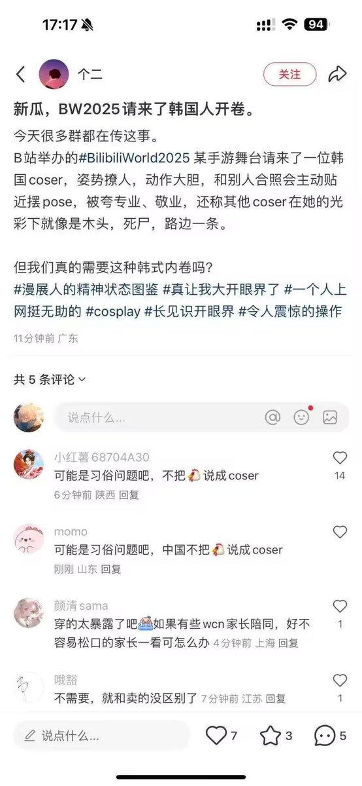
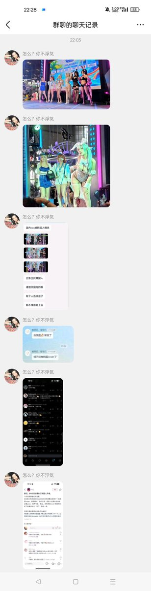
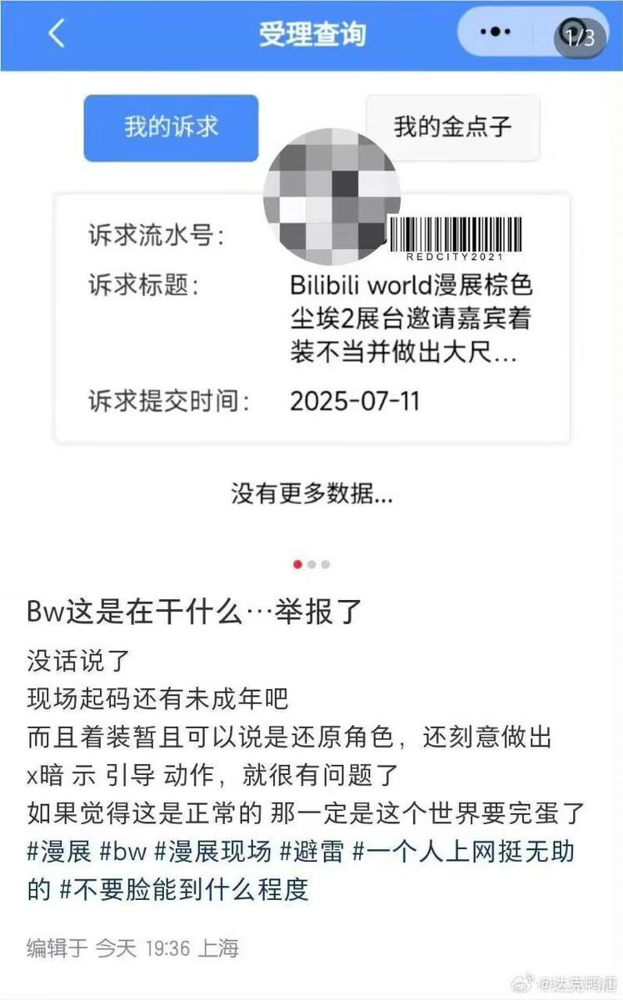

RedFox（2代目）🇲🇴🇭🇰
@FoxRed695449
作為Coser的我:???
每個Coser都有每個Coser的個人想法和特點,COS什麼動作什麼角色什麼風格什麼衣服都是個人自由,依我看評論裡的人沒多少是Coser,罵人舉報的人純有病
但拿著一部分人的「說法」斷章取義的批評國內Coser??!
Excuse me?我COS是自己自己愛好,我自己喜歡別的「暴露」一點的Coser,因為有些Coser身材真的好
但你不能上來就說我不行,什麼鬼啊,中國人特有的扣帽子+分類歧視是吧
我越來越不想去內地漫站原因就是這種b事,某些人我真的忍不住想罵句「屌你老母,食屎啊冚家鏟」



Jasuki__Hope
@Jasuki__Hope
国内漫展请了韩国cos 给与郭楠回扣很到位，被气急败坏的集美举报，要求维持垄断。 https://t.co/1BQbpIE8am